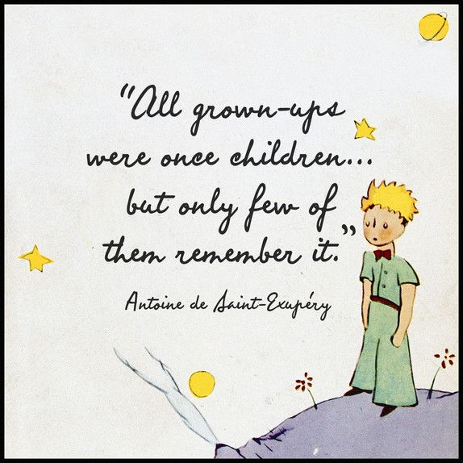

About Me 👩🏽💻🏳️⚧️🌈
Hello there! If you're reading this, you're probably looking to hire me, or at least know more about me. Either/or, let me help you.
I'm a 26 y.o. trans woman from Argentina, who happens to be many things: Amateur astronomer, gardener, philosopher, avid reader, all-around nerd, Professional Tutor, Interpreter, Functional Analyst, natural born problem-solver, and, most importantly for me to talk about here a Programmer!
Regarding the latter, I'm part self-taught (I have been programming since I was 17) and part formally educated. The two things I value about myself (and other people) are: Child-like curiosity - I'm kind of like the Little Prince in that sense: I never let go of a question once I have asked it - and, of course, Radical Empathy! In my case this means that I'm always trying to understand the problem from the perspective of the user, the client, and the team. For it is only when we all understand each other, and speak each others' languages, so to speak, that true cooperative projects (like software development) can be successful and gratifying for all parts involved - be it the CEO, CTO, Sr, SSr, Jr, Trainee, or Client/s.

At the moment, I'm pursuing my degree in Computer Science at U.N.T. (which stands for Universidad Nacional de Tucumán: spanish for National University of Tucumán, Argentina) while working as an Independent Tutor teaching subjects like Mathematics, English, and Programming to a wide and diverse range of learners: men, women, teens, and children from all walks of life.
With experience in Banking systems analysis, mobile app development with Flutter, and web technologies, I combine technical proficiency with strong communication skills honed through International Interpreting and Translating work.
My background spans Full-Stack Development, System Administration, Bot creation, Experience with APIs and Docker Containers, Database management, Deep understanding of Unix-based systems (Terminal & VIM commands, some basic POSSIX-compliant shell-scrpiting, and understanding how these type of OSs are generally built from the ground up - I used to install Arch Linux from scratch for funsies and spend hours upon hours reading documentation, and when I was working with Flutter I was also provided with a Macbook, which also gives me experience with MacOS), Self-learning, and Teaching, allowing me to approach problems with the interdisciplinary mindset necessary for 21st Century Software Development.
I'm also, and not to brag, probably the most extroverted programmer you'll ever meet! And some have even said I'm lowkey funny too, though that judgement is ultimately up to you, dear reader.
Contact:
- Email: sofiavalquiriasandoval@gmail.com
- Location: Tucumán, Argentina
- GitHub: sofia-valquiria